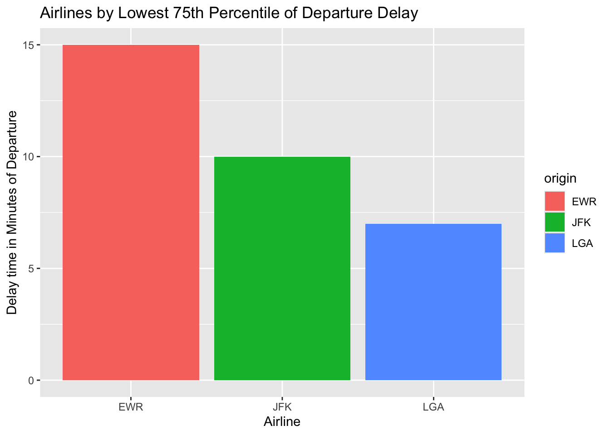
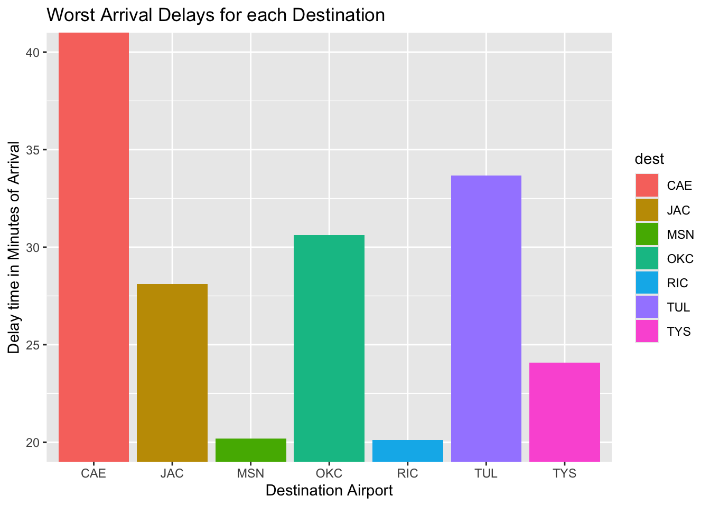

wings_to_fly
The Boss’ Questions:
For each origin airport (JFK, EWR, LGA), which airline has the lowest 75th percentile of departure delay for flights scheduled to leave earlier than noon?
Code
| origin | delay |
|---|---|
| EWR | 15 |
| JFK | 10 |
| LGA | 7 |
Code

Interpretation
Overall, LaGuardia (LGA) has the lowest 75th percentile delay at 7 minutes, meaning flights before noon at LGA tend to run smoother compared to JFK and EWR. JFK is next best at 10 minutes, while EWR is the worst of the three with 15 minutes.
So, if you want to minimize the chances of getting a “bad” delay before lunch, LGA is the strongest choice.
Which origin airport is best to minimize my chances of a late arrival when I am using Delta Airlines?
Code
| origin | mean |
|---|---|
| EWR | 8.78 |
| JFK | -2.379 |
| LGA | 3.928 |
Code

Interpretation
Among the three NYC airports, JFK performs the best for Delta arrivals, with an average arrival time of 2.38 minutes early. LGA averages about 4 minutes late, and EWR is the worst performer at almost 9 minutes late on average.
So, if I want to minimize the chances of arriving late on a Delta flight, JFK is the best origin airport.
Which destination airport is the worst airport for arrival delays? You decide on the metric for “worst.”
Code
| dest | mean |
|---|---|
| CAE | 41.76 |
| TUL | 33.66 |
| OKC | 30.62 |
| JAC | 28.1 |
| TYS | 24.07 |
| MSN | 20.2 |
| RIC | 20.11 |
Code

Interpretation
The worst-performing destination is CAE (Columbia Metropolitan Airport) with an average arrival delay of almost 42 minutes, which is significantly higher than the others. TUL and OKC also stand out with delays above 30 minutes.
So based on average delays, CAE is the destination where you are most likely to arrive late, by a pretty wide margin.